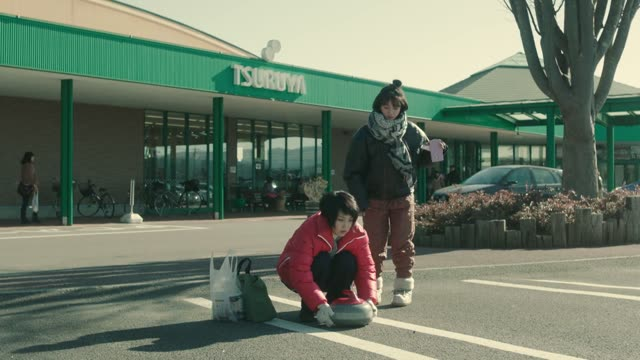

い-Adjective
| Polite | ～いです |
|---|---|
| Casual | ～い |
Same meaning. Only the politeness changes. The adjective itself stays the same.
From Up on Poppy Hill
お母さん、これおいしいね！
"Mom, this is delicious!"
An い-adjective describes something and ends in い: おいしい (tasty), 寒い (cold), 高い (expensive). It can end a sentence just as it is, no だ needed.
On this card, she tastes the food and tells her mom. ね just shares the feeling. The sentence answers "How is it?".
Polite: add です, おいしいです. Before a noun it goes straight on, no な: おいしいラーメン.

YouTube · video
セブンの春巻きが1番美味しいです。
"The spring rolls at Seven [Eleven] are the tastiest."
です goes right after the adjective. 1番 is "the most".
Quick Examples
You step outside in August.
暑い！
"It's hot!"
One word is a full sentence. No だ after an い-adjective.
CasualA shop clerk shows you a bag. You check the price tag.
ちょっと高いですね。
"It's a bit expensive."
PoliteA friend notices your shoes.
新しい靴？
"New shoes?"
新しい goes right before 靴. No な in between.
CasualYour boss asks what your new teacher is like.
優しい先生です。
"She's a kind teacher."
優しい describes 先生. The です at the end is for the whole sentence.
PoliteWith and without
日
"A day." Could be any day.
寒い日
"A cold day." The adjective goes straight in front.
今日は寒いです。
"It's cold today." Drop です for casual: 今日は寒い。
寒いな日
な is only for な-adjectives (静かな日). An い-adjective never takes it.
Examples from Media
Tales from Earthsea
この町はおかしいです。
"Something's wrong with this town."
おかしい = "strange, off". An い-adjective + です for polite.

Quartet · Episode 2
危ないですよ。
"It's dangerous."
Kekkon Dekinai Otoko · Episode 10
高いですね。
"That's high."
Blood pressure: 高い + です.

YouTube · video
ちょっと奥行きが狭い。
"It's a bit shallow."
奥行き is how deep something is, 狭い is "narrow, tight". The adjective ends the sentence as it is.

Shirokuma Cafe · Season 1, Episode 4
寝っ転がるには狭いしさ
"It's too small to lie down in."
狭い straight at the end, no です. Casual.

YouTube · video
あ、ライフル弾嬉しい。
"Oh, rifle ammo, nice."
嬉しい (glad, happy) ends the sentence on its own. Literally "rifle ammo, I'm glad".
Kotaro Lives Alone · Episode 5
うまい！
"Delicious!"
An い-adjective alone is a whole casual sentence.

Shirokuma Cafe · Episode 44
かわいいね。
"It's cute, isn't it."
い-adjectives can end a sentence, no だ.
Further Reading
A Dictionary of Basic Japanese Grammar
Appendix 1, Basic Conjugations · pp. 580–581
Tae Kim's Guide to Japanese Grammar
Adjectives · The i-adjective